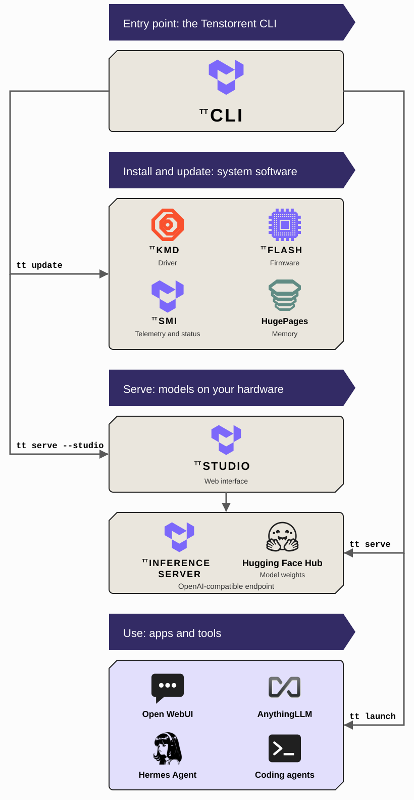

Operating Tenstorrent Software
This document provides an overview of the main components you use to operate Tenstorrent hardware: the Tenstorrent CLI, tt, and TT-Studio. You will learn what each one is for, how they fit together with the software they manage, and where to find their source code. If you want to build on the stack instead, by compiling models or writing kernels, start with Building with Tenstorrent Software.
tt: The Tenstorrent CLI
tt is the Tenstorrent command-line interface and the primary interface for operating your Tenstorrent hardware. It either implements a function itself or drives an existing Tenstorrent tool, such as TT-SMI or tt-installer, behind one stable set of commands.
Interact with tt when you want to set up a Tenstorrent system and run models on it without working through the individual tools yourself. It installs and updates the system software, checks that your devices are healthy, lists the models validated for your hardware, serves one as an OpenAI-compatible endpoint, and connects applications to it. Because it is a command-line tool, every step can be scripted and automated.
The main project is located in the tt-cli GitHub repository. Installing Tenstorrent Software walks through a first install with it.
TT-Studio: The Web Interface
TT-Studio is a web application for running and using AI models on Tenstorrent hardware from a browser. It wraps the same serving engine that tt serve uses behind a point-and-click interface, so you choose a model from a list filtered to your hardware, deploy it, and use it without touching a terminal.
Interact with TT-Studio when you want to try a model from a browser, or hand a running system to people who do not use a command line. It provides an interface for each kind of model: chat with document knowledge bases for language models, image and video generation for diffusion models, speech-to-text for recognition models, object detection for vision models, and a voice agent that chains them together. Every model TT-Studio runs is also served on an API endpoint, so applications can use it at the same time as the browser does. tt serve <model> --studio starts TT-Studio and deploys a model in one step; it also runs on its own, and can point at endpoints on Tenstorrent hardware elsewhere.
The main project is located in the tt-studio GitHub repository.

What tt Manages
System software
tt update installs and updates the system software: the kernel-mode driver (TT-KMD) that exposes the devices to Linux, the device firmware and the TT-Flash tool that writes it, the HugePages memory configuration the devices need, TT-SMI for telemetry and status, and a container runtime, normally Docker, for serving models. Tenstorrent tests these components together, and tt update brings a system onto the latest tested combination in one command, using tt-installer for the parts that install as root. One piece of system configuration sits outside it: on a multi-card Wormhole system the chips are linked into a mesh by tt-topology, a one-time step described in Installing Tenstorrent Software. Blackhole systems need no equivalent. tt device and tt smi then show which devices are present, along with their firmware, temperature, power, and clocks.
Model serving
tt serve serves a model as an OpenAI-compatible endpoint. For the models in Tenstorrent’s tested catalog it runs TT-Inference-Server, which packages each model with the right runtime in a container and downloads its weights from the Hugging Face Hub. Community bundles published on the Hub run through tt-model-manager, since each bundle carries its own serving stack. tt model list shows the catalog for your hardware, filtered to the configuration tt detects, and it is not limited to large language models: it includes diffusion models for image and video generation, speech and audio models, and vision models. It is the authoritative list of models validated for your hardware; Tenstorrent does not test or maintain community bundles.
Apps and tools
tt launch connects a ready-made client to the model being served. Web UIs such as Open WebUI and AnythingLLM are pulled and run for you in a container; terminal coding agents such as OpenCode, Aider, pi, Qwen Code, and Hermes Agent are ones you install yourself, and tt configures them to reach your model. Because the endpoint speaks the OpenAI API, any other OpenAI-compatible client works too.
Choosing Between tt and TT-Studio
Both paths serve the same catalog, and a model served by one is reachable from the other, so the choice is about how you want to work:
Use
ttwhen you want an API endpoint for applications, scripts, or agents, when you are setting up or maintaining a system, or when you want to automate any of that.Use TT-Studio when you want to try models from a browser, when the people using the system are not terminal users, or when you want the built-in chat, generation, and recognition interfaces without connecting a separate client.
For monitoring your hardware while models run, tt smi gives a status snapshot and TT-Toplike reads power, temperature, and core activity in real time from the chips.
Where to Go Next
Set up a system with Installing Tenstorrent Software: install
tt, update the system software, and verify your hardware.Serve more kinds of models with the Serve Models guide, which walks the catalog,
tt serve, and TT-Studio with a diffusion model as the example.Deploy LLMs in production by following Serve in Production, which runs a vLLM endpoint directly from TT-Inference-Server.
Build on the stack by reading Building with Tenstorrent Software, which introduces TT-Forge™, TT-NN™, and TT-Metalium™.
As always, if you have any questions, please raise a support request with our team.